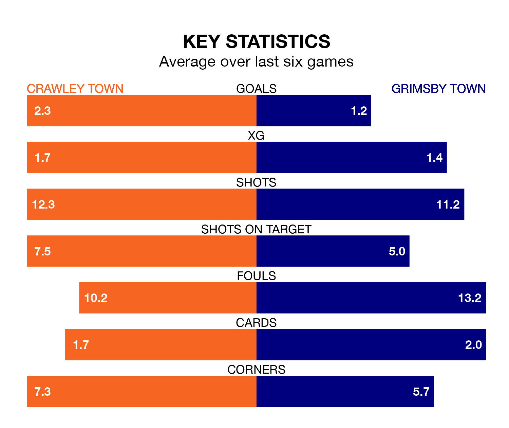

Struggling Grimsby Town face Crawley Town away at the Broadfield Stadium on Saturday looking to build on a win in their last league outing.
After securing all three points with a 2-0 victory over Swindon Town on April 20, the Mariners sit 21st in EFL League Two.
They travel to play a Crawley side eighth in the standings, who were held in their last match, 2-2 against Sutton United.
With 57 goals in 45 games so far this season, Grimsby are scoring at below the league average rate with 1.3 goals per game. And they are conceding more than average, letting in 72 goals at a rate of 1.6 per game.
Crawley, meanwhile, are above average scorers, with 1.6 goals per game, compared to a league average of 1.5. They have conceded 1.5 goals per game.
In the last 10 years, Crawley and Grimsby have played each other on 13 occasions. Crawley won five of them, Grimsby four, and they drew four times.
On average, the Red Devils scored 1.5 goals and the Mariners 1.4 in those matches.
Their last meeting was on September 23, when Crawley won 3-2 away.
In Danilo Orsi-Dadamo, Crawley Town have one of the league's most on-form strikers so far this season. He has notched 18 goals in 44 appearances, to sit eighth in the scoring charts.
His goal rate of one every 212 minutes is quicker than that of Danny Rose, Grimsby Town's top scorer with a goal every 242 minutes, and a total of 13 goals in 37 games.
The Red Devils are in mixed form in EFL League Two, with two wins and two draws from their last six games.
With three wins and a draw over that period, the Mariners' form is slightly better – they have taken 10 points from 18, compared to the hosts' eight.
Updated: 07:59 (UTC), 26/04/24